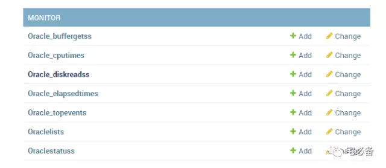
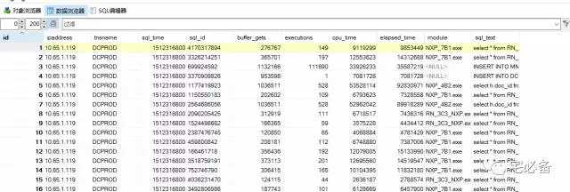
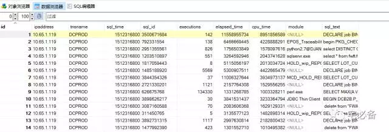
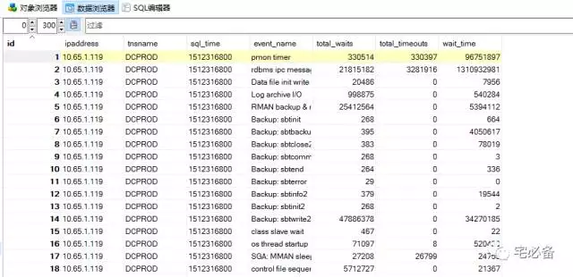

使用Django获取Oracle TOP SQL数据并存入MySQL数据库
2017-12-05 Python 宅必备
前面介绍了如何利用Python搭建一个网站并且介绍了如何在其中执行Oracle命令并在前端显示出来 然后讲述自定义命令相关的知识
精彩内容可通过公众号自定义菜单查看也可直接查看我的网站
http://www.zhaibibei.cn/oms/1.1/
http://www.zhaibibei.cn/oms/2.1/
http://www.zhaibibei.cn/oms/3.1/
通过上面我们已经知道了如何使用Django获取数据库的信息 接下来我们说的是如何通过Django创建的网站来监控Oracle的TOP SQL
注意事项
前面的内容我使用的是CentOS 6.8+ Python 2.7 的环境
从这期开始已经改成了CentOS 7 +Python 3.6 的环境
关于如何迁移将在后面介绍
开发环境
操作系统:CentOS 7.4
Python版本 :3.6
Django版本: 1.10.5
操作系统用户:oms
上节我们介绍了如何新建一个自定义命令，这节讲述如何使用其获取Oracle常见的性能指标，如物理读，逻辑读，CPU Time,等待事件等并保存在MySQL数据库中
1. 新建MySQL表存放监控数据
我们日常在运维Oracle数据库时有很多指标需要考虑
这里我挑选了一些日常检查的项目
-
物理读:oracle_diskreads
-
逻辑读:oracle_buffergets
-
执行时间:oracle_elapsedtime
-
CPU 时间:oracle_cputime
-
TOP等待事件:oracle_topevent
1.1 添加models
这里列出来几个表的创建，全部代码请查看我的github主页
注意这里不同于Python2.7版本，原来的unicode在这里使用str
vim models.py
class oracle_diskreads(models.Model):
ipaddress=models.GenericIPAddressField()
tnsname=models.CharField(max_length=50)
sql_time=models.BigIntegerField(blank=True)
sql_id=models.CharField(max_length=50)
disk_reads=models.BigIntegerField(blank=True)
executions=models.BigIntegerField(blank=True)
cpu_time=models.BigIntegerField(blank=True,null=True)
elapsed_time=models.BigIntegerField(blank=True,null=True)
module=models.CharField(max_length=65,null=True)
sql_text=models.CharField(max_length=1000)
def __str__(self):
return self.tnsname
class Meta:
app_label='monitor'
class oracle_topevent(models.Model):
ipaddress=models.GenericIPAddressField()
tnsname=models.CharField(max_length=50)
sql_time=models.CharField(max_length=100)
event_name=models.CharField(max_length=100)
total_waits=models.BigIntegerField(blank=True)
total_timeouts=models.BigIntegerField(blank=True)
wait_time=models.BigIntegerField(blank=True)
def __str__(self):
return self.tnsname
class Meta:
app_label='monitor'
1.2 创建数据库表
[oms@LProAP-MONITOR1 mysite]$ python manage.py makemigrations
[oms@LProAP-MONITOR1 mysite]$ python manage.py migrate
1.3 添加至admin管理
vim admin.py
from django.contrib import admin
# Register your models here.
from monitor.models import oraclelist
from monitor.models import oraclestatus
from monitor.models import oracle_buffergets
from monitor.models import oracle_diskreads
from monitor.models import oracle_elapsedtime
from monitor.models import oracle_cputime
from monitor.models import oracle_topevent
from monitor.models import linuxlist
admin.site.register(oraclelist)
admin.site.register(oraclestatus)
admin.site.register(oracle_buffergets)
admin.site.register(oracle_diskreads)
admin.site.register(oracle_elapsedtime)
admin.site.register(oracle_cputime)
admin.site.register(oracle_topevent)
admin.site.register(linuxlist)

以上就完成了表的创建，一些字段的解释如下:
-
ipaddress:Oracle数据库的IP地址
-
tnsname:Oracle数据库的TNS名称
-
sql_time:该语句获取到的时间
-
sql_id:Oracle SQL语句的SQL ID,由于我这有9i的库，所以实际捞取的是hash_value的值
-
executions:Oracle SQL 语句的执行次数
-
elapsed_time:Oracle SQL 语句执行的时间
-
module:Oracle SQL 语句执行的模块
-
sql_text:Oracle SQL 语句的文本(这里从空间空间考虑，只截取前40个字符)
-
event_name:等待事件的名称
-
total_waits:等待事件等待的次数
-
total_timeouts:等待事件超时次数
-
wait_time:等待事件等待的时间
2. 编写自定义命令获取指标并存入数据库
如何创建自定义命令请参考:
http://www.zhaibibei.cn/oms/3.1/
2.1 主体程序
这里我们用oracle_topsql_mysql.py程序来获取Oracle TOP SQL
vim monitor/management/commands/oracle_topsql_mysql.py
#coding=utf-8
from django.core.management.base import BaseCommand
from django.contrib.contenttypes.models import ContentType
import os
import cx_Oracle
import time
from monitor.command.sendmail_phone import *
from monitor.command.getoracleinfo_topsql import *
class Command(BaseCommand):
def handle(self, *args, **options):
ip=oraclelist.objects.all().order_by('tnsname')
#sql_time=str(time.time()).split('.')[0]
sql_time=str(time.mktime(time.strptime(time.strftime('%Y%m%d %H', time.localtime()),'%Y%m%d %H'))).split('.')[0]
for i in ip:
ipaddress1=i.ipaddress
username=i.username
password=i.password
port=i.port
tnsname1=i.tnsname
try:
db = cx_Oracle.connect(username+'/'+password+'@'+ipaddress1+':'+port+'/'+tnsname1 ,mode=cx_Oracle.SYSDBA)
cursor = db.cursor()
buffergets=getbuffergets(cursor)
cputime=getcputime(cursor)
topevent1=gettopevent(cursor)
cursor.close()
db.close()
for j in buffergets:
sql_id=j[0]
buffer_gets=j[1]
executions=j[2]
cpu_time=j[3]
sql_text=j[6]
insert.save()
#print ('ss')
disk_reads=k[1]
executions=k[2]
cpu_time=k[3]
elapsed_time=k[4]
module=k[5]
sql_text=k[6]
insert=oracle_diskreads(ipaddress=ipaddress1,tnsname=tnsname1,sql_time=sql_time,sql_id=sql_id,cpu_time=cpu_time,elapsed_time=elapsed_time,executions=executions,disk_reads=disk_reads,module=module,sql_text=sql_text)
insert.save()
for l in elapsedtime:
sql_id=l[0]
executions=l[2]
cpu_time=l[3]
elapsed_time=l[1]
module=l[4]
sql_text=l[5]
insert=oracle_elapsedtime(ipaddress=ipaddress1,tnsname=tnsname1,sql_time=sql_time,sql_id=sql_id,cpu_time=cpu_time,elapsed_time=elapsed_time,executions=executions,module=module,sql_text=sql_text)
insert.save()
for m in cputime:
sql_id=m[0]
executions=m[2]
cpu_time=m[1]
elapsed_time=m[3]
module=m[4]
sql_text=m[5]
insert=oracle_cputime(ipaddress=ipaddress1,tnsname=tnsname1,sql_time=sql_time,sql_id=sql_id,cpu_time=cpu_time,elapsed_time=elapsed_time,executions=executions,module=module,sql_text=sql_text)
insert.save()
for n in topevent1:
event_name=n[0]
total_waits=n[1]
total_timeouts=n[2]
wait_time=n[3]
insert=oracle_topevent(ipaddress=ipaddress1,tnsname=tnsname1,sql_time=sql_time,event_name=event_name,total_waits=total_waits,total_timeouts=total_timeouts,wait_time=wait_time)
insert.save()
except Exception as e:
content= (i.ipaddress+' is Unreachable,The reason is '+str(e)).strip()
send_mail_phone(to_list,'Oracle Performance Monitor Exception Occured',content)
print( content)
2.2 调用的函数
上面主体程序调用了一些函数用于从Oracle数据库获取必要的数据
文件路径为monitor/command/getoracleinfo_topsql.py
这里选取几个，具体的参见我的github主页,可根据实际情况进行调整
def getbuffergets(cursor):
s=cursor.execute('select hash_value, abs(buffer_gets),abs(executions) ,abs(cpu_time),abs(elapsed_time),module,substr(sql_text,0,40) from v$sqlarea where abs(buffer_gets)>100000')
row=s.fetchall()
return row
def getdiskreads(cursor):
s=cursor.execute('select hash_value, abs(disk_reads),abs(executions) ,abs(cpu_time),abs(elapsed_time),module,substr(sql_text,0,40) from v$sqlarea where abs(disk_reads)>100000')
row=s.fetchall()
return row
def gettopevent(cursor):
s=cursor.execute('select event,abs(total_waits),abs(total_timeouts),abs(time_waited) from v$system_event')
row=s.fetchall()
return row
这个程序讲解如下:
-
先从oraclelist表中获取信息
-
然后遍历每个数据库，当monitor_type为1和performance_type为1时继续
-
利用取出来的信息连接数据库，当连接成功后执行相应的程序获取TOP SQL数据，获取完成后关闭数据库连接
-
接下来采用insert/save方法保存到MySQL数据库中
2.3 一些注意事项
-
由于我有9i的库，所以统一抓取hash_value
-
各个函数的内容请自行查看源代码，很容易理解
-
由于出现过负数的情况所以采用了abs函数
-
这里调用了send_mail函数用于程序运行异常时通知我
3. 最终结果
使用如下命令运行
/usr/bin/python /home/oms/mysite/manage.py oracle_topsql_mysql



可以看出数据库的信息已经保存在MySQL数据库中了
4. 设置自动运行
这里我们设置每小时执行一次，并重定向所有日志至一个文件
这样我们可以通过检查该日志文件判断脚本是否正常运行
0 * * * * /usr/bin/python /home/oms/mysite/manage.py oracle_topsql_mysql >>/home/oms/mysite/crontab.log 2>&1
5. 源代码位置
https://github.com/bsbforever/oms_django
好了，这节介绍了如何利用自定义命令获取Oracle数据库的性能指标并保存在MySQL数据库中
下节介绍如何将这些数据展示在一个页面上
详细请点击阅读原文: